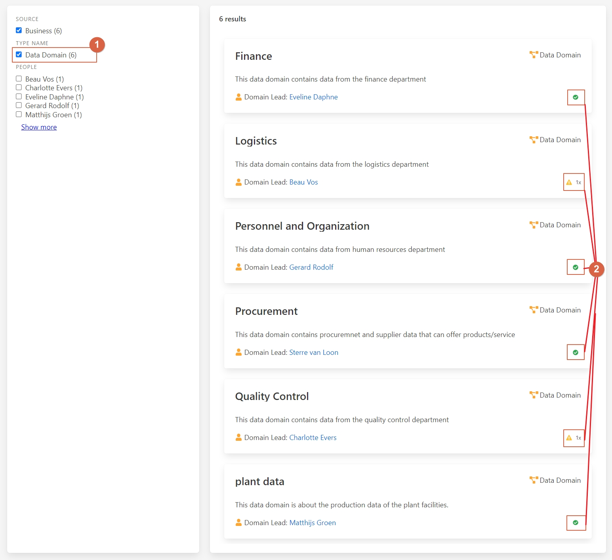
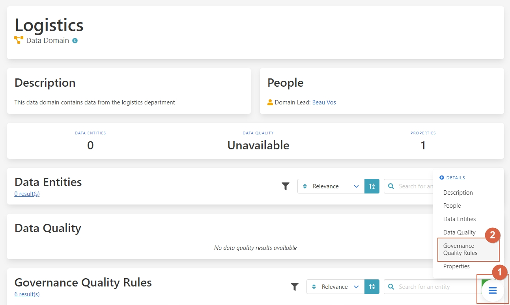

Monitoring Data Governance Quality
Implementing data management in an organization involves multiple facets: setting up the data governance organization, establishing business and technical data governance models, and monitoring data quality. Keeping track of progress across these activities can be challenging. Aurelius Atlas provides a comprehensive tool for key stakeholders to monitor implementation progress and data governance quality, aiding better decision-making for future improvements.
Challenges
- Comprehensive Oversight: Difficulty in monitoring progress across various data governance activities.
- Quality Assurance: Ensuring data governance rules are followed across the organization.
- Prioritization: Identifying areas needing immediate attention for improvement.
- Transparency: Communicating the status of data governance compliance to stakeholders.
Benefits and Features
- Holistic Monitoring: Track implementation progress and data governance quality.
- Rule Compliance: Assess compliance with data governance rules for each entity.
- Quality Scores: Provide overall data governance quality scores for entities.
- Actionable Insights: Identify potential issues and focus on necessary improvements.
Walkthrough
Consider a business data steward responsible for maintaining data governance quality in their domain. The steward uses Aurelius Atlas to review potential issues and delve into the details.
Watch the video walkthrough below or read the step-by-step instructions.
Step-by-Step Guide
Let's begin by searching for the "Logistics" domain within Aurelius Atlas to assess its data governance quality. Click on the button as shown in the image below:
[ ]
(../img/screenshots/data-quality-management/data-management-01.jpg)
]
(../img/screenshots/data-quality-management/data-management-01.jpg)
Icons such as data type indicators, check marks for fully populated entities, and warning symbols for incomplete ones help us quickly identify areas needing attention.
Next, click on the "Logistics" entity flagged with a warning symbol to investigate further:
[] (../img/screenshots/data-quality-management/data-management-02.jpg)
Upon accessing the details page, navigate to the "Governance Quality Rules" section to review specific rules applied to the entity:
[] (../img/screenshots/data-quality-management/data-management-03.jpg)
Here, you can assess the compliance status of the "Logistics" entity with the applied data governance rules:
[ ]
(../img/screenshots/data-quality-management/data-management-04.jpg)
]
(../img/screenshots/data-quality-management/data-management-04.jpg)
Check if all required data entities are complete or if there are any missing elements that require attention.
By following these steps, you can effectively monitor and improve data governance quality, ensuring compliance with established rules and standards across your organization.